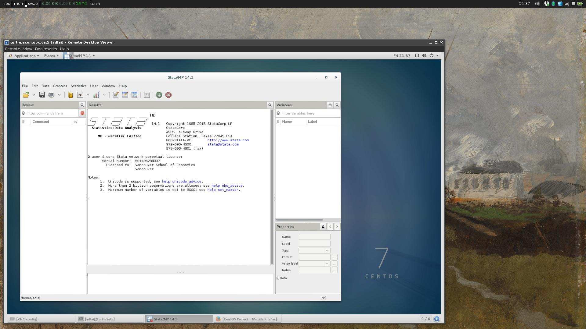
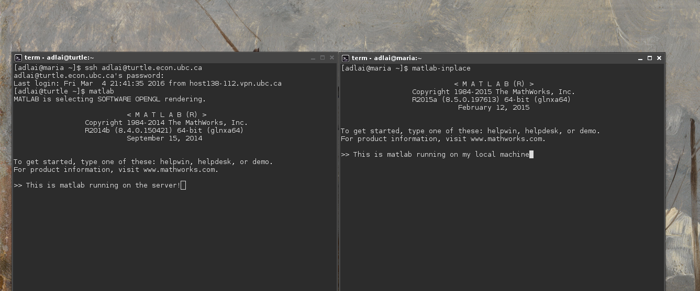
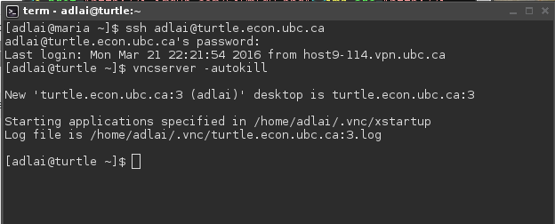
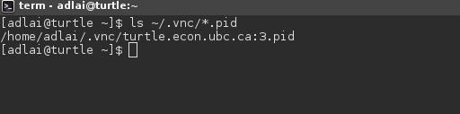
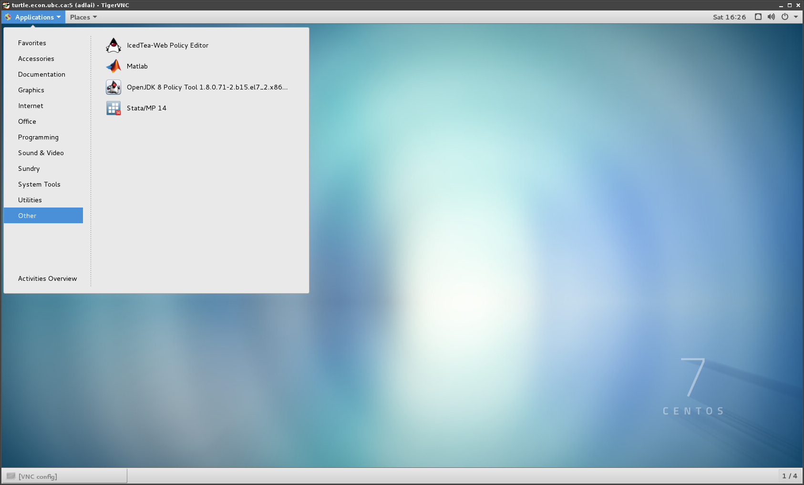
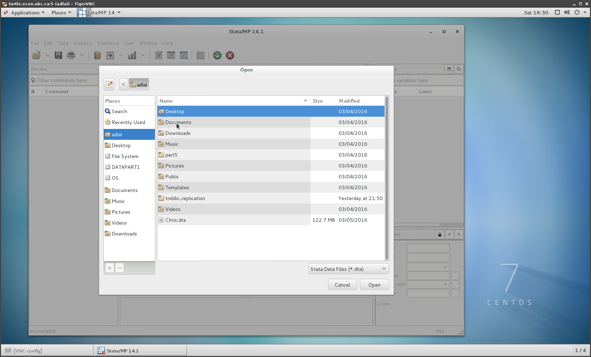
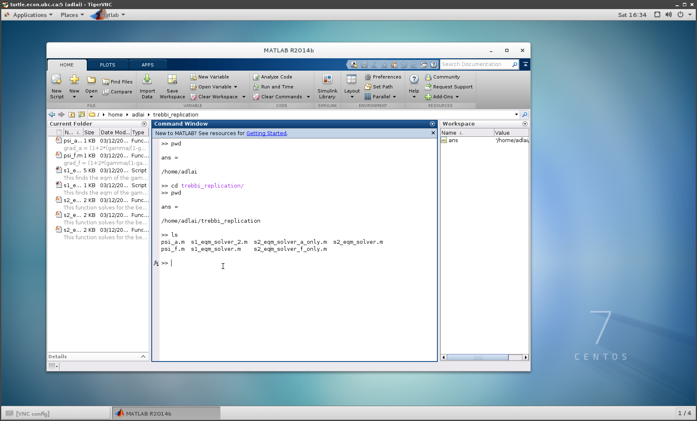

VSE Server Manual
 This brief tutorial will familiarize you with how to connect to and use the VSE linux server. You first need to have an account set up. See the How to Connect section.
This brief tutorial will familiarize you with how to connect to and use the VSE linux server. You first need to have an account set up. See the How to Connect section.
Contents
- Server overview
- Server use policy
- Contributing
-
How to connect
a. Connecting to the UBC VPN
b. Connecting to the server
- Transferring files
- Using Stata and MATLAB
- Keep Jobs Running after Logout
- Running Long Jobs at Lower Priority
- Downloading software
- Troubleshooting version errors
- Dropbox
- The linux command line
- Other resources
Server Overview
The server is running CentOS linux, which is a RedHat derivative designed specifically for servers. Check out the gritty details on the CentOS wiki: https://wiki.centos.org/ - but if you're new to linux this is not the place to look for information as it's aimed at server administrators; other resources will be introduced below.
The server has 24 physical cores (48 CPUs), 188G of memory, and over 1TB of storage.
Installed computational software includes: Python (2.7/3), MATLAB 2014, Stata 14, Julia, R, Dynare, and Octave.
Currently the server is running XFCE for its default desktop environment, but GNOME, i3, and fluxbox are also installed.
Server use policy
The server is for computation purposes only, not for routine tasks you could do equally well on your laptop (for example, document processing or web browsing).
Currently, the hard disk storage limit is set to 20G for each PhD student, 5G for each MA student.
If you need more storage space for a designated period of time, contact Masaru Kiyota.
Because the memory and processing power will be shared by all users on the server, it is important you are aware of the shared resources you are using. You can check how intensive your processes are by running top -U adlai in a terminal, replacing adlai with your username. See man top for further details on how to use top.
If you don't have code running on the server, please shut down any VNC sessions you have running (ie, log out of the X windows desktop environment), because these drain resources.
Please also read the section on Running Long Jobs at Lower Priority.
Contributing
The server is a public good maintained largely through volunteer work. It was students that approached the department about buying a server, and besides Masaru, students that administer and troubleshoot it. There are myriad ways you can contribute to keeping the server a valuable resource for your colleagues, including:
- Contributing to this manual (typos, contributing sections, cleaning up the HTML, ...)
- Troubleshooting any problems problems you run into and helping your colleagues with theirs
- Suggesting improvements to the server that 1) are free, and 2) require little work for server admins
- When presented with the opportunity, convince faculty of the utility of the server. For example, if you're chatting with the department head and they ask what you would suggest to improve the program, mentioning the server wouldn't hurt. Few faculty even know the server exists.
How to Connect
Before you can connect to the server you need to have an account set up for you. Email Masaru Kiyota at masaru.kiyota@ubc.ca, and specify that you would like an account on the graduate computation server in the economics department, and include 1) your full name, 2) whether you are MA or PhD, and 3) a corresponding email address.
Once you have an account, there are two steps to connecting to the server.
- Connect to the UBC virtual private network (VPN)
- Once on the VPN, connect to the server
Think of our server as a house in a gated community. Connecting to the UBC VPN (1) is like getting let into the gated community, and connecting to the server (2) is like getting let into the house.
1. Connecting to the VPN
There are several ways of connecting to the VPN, and UBC has a page to help you:
https://it.ubc.ca/services/email-voice-internet/myvpn/setup-documents
The guide recommends you use the Cisco AnyConnect client, but you can use your client of choice - the connection information is provided for a manual setup.
If you run into trouble following their guide, the IT department or our in-house IT guy Masaru can help you out.
2. Connecting to the server
Once you're on the VPN, you can use the server in two ways: through Virtual Network Computing (VNC), or directly through Secure SHell (SSH). VNC is a popular protocol used for remote desktop access. If you have used any remote desktop software before, it's possible you have already used VNC. SSH is a way of connecting to the server using a terminal, and your interaction with the server will (not without exception) occur through the command line.
Note: VNC and SSH use different authentication systems, so you will have different passwords for both. Once logged into the server, you can use passwd to change your user account password (which is used by SSH) and vncpasswd to change your VNC password. It's fine to use the same password for both.
When you connect to the server using VNC, you will have a window open with a miniature window manager running inside; here's a screenshot of me using VNC to access the server; you can see my desktop, and Stata running on the server

Note: Since first writing the guide the default window manager (the graphical representation of the operating system shown in the screenshot above) has change from GNOME to XFCE. As such, the screenshots including the window manager will look different. You can change the default window manager by editing the ~/.vnc/xinitrc file; GNOME, XFCE, and i3 are available (advanced users only).
Alternatively, you can use SSH alone. Unless you are running linux on your personal computer, this will mean that you can only interface with the computer through the terminal. Here's a screenshot of me running matlab on the server after connecting through SSH, side by side with MATLAB running locally.

If you want to use VNC you still have to connect via SSH, so first we'll cover that.
Connecting via SSH
If you are on Linux or Mac this is very simple, just open a terminal and type:
ssh adlai@turtle.econ.ubc.ca
adlai with your username. Your computer will ask if you want to trust the server's credentials; say yes, and you're connected.
If you are on Windows you can download a graphical SSH client. One such client that I can vouch for is available here: http://www.putty.org/
Connecting via VNC
There are two steps:
- Log into the server with SSH and start a vncserver.
- Connect to the VNC server using a VNC client.
First download a VNC client. Here are some options:
Cross Platform
Mac
See the guide at http://osxdaily.com/2013/04/05/vnc-client-mac-os-x-screen-sharing/. I recommend you don't use this client.
Linux/UNIX
http://tigervnc.org/ (Recommended!)
Once you have the client, log into the server using SSH and change your password using vncpasswd. Once done, type vncserver -autokill to start a VNC session. You will get some output that tells you what port the VNC server is using, which will be a number in the range 5900-5999. Here is a screenshot of me logging in with SSH and starting the VNC server:

My VNC server has started at address turtle.econ.ubc.ca:3, the 3 refers to the port 5903. Now I can log in using my VNC client using the following information:
hostname: turtle.econ.ubc.ca
port: 59XX
XX with the port assigned to you when the server started. The VNC client will ask you for the information above, along with your VNC password.
For example, were I to connect to the server I started above on linux using tigervnc, I would enter the command
vncviewer turtle.econ.ubc.ca:5903
If you forget the port where VNC is running, log back in using SSH and type ls ~/.vnc/*.pid. If you see a file ending with .pid, it means the VNC server is still running, and the port number will be shown. Here's a picture:

I have a file there called turtle.econ.ubc.ca:3.pid, which means I have a VNC server running on display 3 (port 5903). To shut down the server, type vncserver -kill :3, changing the 3 as appropriate.
If you really get stuck and can't log in to your vnc session, type "killall Xvnc" in your ssh session, then start a new vnc session with "vncserver -autokill", and try again.
Transferring Files to and from the Server
Files on the server are persistent, and stored in your home directory. The location of this directory will be in the home folder, a subdirectory of the root / directory. For example, /home/adlai.
Everything inside your home directory is 'yours', you can create or delete directories as you see fit. Besides the ways of transferring files you are probably familiar with (Dropbox, emailing them to yourself) you can transfer files directly using SSH. This will be very fast when you are on campus, good for large files.
There are several ways to do this. On Linux (and possibly also Mac) you can use the scp command, for "Secure CoPy". Here's how it works:
Suppose you want to copy some matlab files from a local directory myproject to a directory in your home folder on the server called myfiles. From your laptop, open a terminal, navigate to myproject, then type
[adlai@laptop ~]$ scp * adlai@turtle.ubc.ca:/home/adlai/myfiles/
myproject, on my machine, to the directory myfiles, on the server'. You will be prompted for your SSH password, then the transfer will start.
To transfer files from the server to your local machine, you can use the same command. The trailing . refers to the current working directory, so this command says copy all files from the directory myfiles on the server into the current working directory on my local machine.
[adlai@laptop ~]$ scp adlai@turtle.ubc.ca:/home/adlai/myfiles/* .
Using Stata and Matlab
If you are connecting through VNC, you can open Stata and MATLAB directly from GNOME. They are found in the 'Other' catagory, when you click the Applications button in the top left.

Loading a dataset will be the same as on your local machine, except that the directory structure is different. Depending on where you downloaded your dataset, it will be somewhere in your home directory (which is named after your user account). In the screenshot below, I'm looking at all the folders in my home directory, called 'adlai'.

For MATLAB it works similarly; here's an example.

If you're connecting using SSH, you can use MATLAB and Stata through the command line by typing
[adlai@turtle ~]$ /usr/local/stata14/xstata-mp
[adlai@turtle ~]$ ln -s /usr/local/stata14/xstata-mp stata14
Now you can just type stata14 in the terminal when you're in your home directory to start Stata.
MATLAB is already a part of the path, so to start it you can just type matlab.
[adlai@turtle ~]$ matlab
Keeping Jobs Running on the Server after Logout
When you start a VNC server it will stay running until you log out (if you close your VNC viewer your VNC session stays running). If you log in with SSH, logging out will close any running jobs. To prevent this, you can use a terminal multiplexer.
Byobu, which is a wrapper for tmux, is my multiplexer of choice, and it's installed on the server. Without getting into the details, just type byobu, then the command you want to run (eg: matlab -nodesktop -r divide_by_zero.m), then hit F6 to detach byobu. Now you can log off the SSH session and MATLAB will keep running. When you log back into the server type byobu again to attach back to the session.
If you forget to use byobu, or realize you have to leave suddenly, you can still detach a running job. See here: http://www.cyberciti.biz/faq/unix-linux-disown-command-examples-usage-syntax/.
See here for more information on using byobu:
Running Long jobs at Lower Priority
It's a good policy required to lower priority for intensive jobs that you will have running for long periods of time. A lower priority still means your job will run at top speed when the server is not under heavy load.
Launch a command at a lower priority using the nice command (because using it makes you a nice person). The syntax is nice [command], for example,
nice matlab -r max_unlikelihood.m
-n flag to any integer [0,19]. If you forgot to use nice when starting your job, you can use renice which changes the priority of a running process. See man nice and man renice for details.
Note: If you've started a parallel processing job it can be a pain to go through and renice each process. You can use the command renice_procs to renice all of your processes. Type renice_procs --help for usage. The TL;DR example use is renice_procs python 5, replacing 'python' as appropriate. Use top -u $USER to see your processes.
Downloading your own software
In order to keep security risks to a minimum, if you need any additional software you will need to download and install it in your home directory. This is not analogous to installing software on your personal laptop, which requires administrative privledges.
Installing software in your home directory may entail downloading and compiling the source code for the program you want. Here are some best practices:
- Create a
bin/ directory in $HOME, and keep all your executable files there.
- Create a
tmp/ directory in $HOME, and do all your compiling and downloading there.
Check the guide here https://luv.asn.au/overheads/compile.html on compiling source code on Linux/UNIX.
Troubleshooting version errors
CentOS is a fairly conservative operating system and you may find that the server versions of some software or libraries (for example, C libraries) will be too old for some modern software. Unfortunately there isn't much we can do to speed up updates in CentOS repositories, but you can build your software development environment in your home directory.
See the tutorial here: https://zxkjack123.github.io/programming/install_gcc_without_root/, which uses the software GSRC, available here: https://www.gnu.org/software/gsrc/. I will add a couple things to that howto:
- The software (including libraries) you install will be in the directory you specify when configuring GSRC. For example if you ran
./configure --prefix=$HOME/env then your libraries will be in $HOME/env/lib and $HOME/env/usr/lib. You can tell the program you are trying to run to look in these locations for libraries using the environmental variable LD_LIBRARY_PATH, for example, LD_LIBRARY_PATH=$HOME/env/usr/lib/ ~/.
-dist/dropboxd should make the dropbox binary aware of the libraries you have built. (UPDATE: GSRC actually includes a script automatically set the library path - run source setup.sh in the GSRC directory)
- You can make use of the servers resources to speed up compiling by adding the flag
-j X to your make commands, replacing X with the number of cores you want to use. Please check the server utilization by other students before choosing a high number of cores to use. For example make -j 10 -c gcc8 compiles GCC8 using 10 cores.
Downloading Dropbox
Support for the Dropbox software has been discontinued. You can use rclone to access your dropbox storage from the command line. See the documentation for rclone here: https://rclone.org/docs/
The linux command line
Whether you have connected via SSH or VNC, you will eventually run into the linux command line. If you aren't already familiar with the command line it can be a bit daunting. While many stalwart linux users (myself included) tend to insist you learn the hard way - by reading huge manuals deep into the night - there are many resources available to familiarize yourself with how the command line works. The best strategy may be to google for one yourself until you find one that moves at a speed you're comfortable with. Below I present a brief introduction to the basics, largely adapted from web sources.
When you open a terminal you will be prompted with something like the following:
[adlai@turtle ~]$
~ refers to your current location (~ means home directory). The $ is the prompt for entering a command.
The linux directory structure is defined relative to a root directory, which is denoted by /. Here's what the terminal looks like when you're in the root directory.
[adlai@turtle /]$
/ to separate directory names in a path. For example,
/ "root" directory
/usr directory usr (sub-directory of / "root" directory)
/usr/STRIM100 STRIM100 is a subdirectory of /usr
Commands are entered into the terminal by typing the command name, followed by any arguments or flags you want to pass to the command. For example, the command cd is for change directory. If I want to change from the current directory to another (the root directory / for example), I would pass / as an argument by typing cd /. Here are some examples for navigating directories:
pwd Show the "present working directory", or current directory.
cd Change current directory to your HOME directory.
cd /home/adlai Change current directory to your (my) HOME directory.
cd init Change current directory to init which is a sub-directory of the current
directory.
cd .. Change current directory to the parent directory of the current directory.
cd ~ Change the current directory to your home directory (same as cd /home/adlai)
ls command, for 'list'. Some examples:
ls List current directory's contents
ls / List the root directory's contents
ls -a List the current directory including hidden files. Hidden files start
with "."
ls -lh List all the file and directory names in the current directory using
long format, with human-readable measures of file size (ie, Mb instead of bytes).
man command, for 'manual'. The manual page lists all the possible flags and arguments, with descriptions and often examples and even email addresses of the developers. The man command takes the application you want to learn about as its argument. So, to read more about cp, I would do:
[adlai@turtle ~]$ man cp
j and k to move up and down, and when you're done hit q to exit back to the terminal.Here are some examples of other common tasks:
Moving, renaming, and copying files:
cp file1 file2 copy file1 to a new file called file2
mv file1 newname move/rename file1 to newname
mv file1 ~/AAA/ move file1 into sub-directory AAA in your home directory.
rm file1 [file2 ...] remove or delete a file. In UNIX [ ] refers to optional arguments.
rm -r dir1 [dir2...] delete the directory dir1 (dir2, dir3, ...) and everything inside it
mkdir dir1 [dir2...] create directories
mkdir -p dirpath create the directory dirpath, including all implied directories in the path.
rmdir dir1 [dir2...] remove an empty directory
cat filename Dump a file to the screen in ascii.
more filename Progressively dump a file to the screen: ENTER = one line down
SPACEBAR = page down q=quit
less filename Like more, but you can use Page-Up too. Not on all systems.
vi filename Edit a file using the vi editor. All UNIX systems will have vi in some form.
emacs filename Edit a file using the emacs editor. Not all systems will have emacs.
head filename Show the first few lines of a file.
head -n filename Show the first n lines of a file.
tail filename Show the last few lines of a file.
tail -n filename Show the last n lines of a file.
find location -name filename
find . -name aaa.txt Finds all the files named aaa.txt in the current directory or
any subdirectory tree.
find / -name stata Find all the files named 'stata' anywhere on the system.
find / -name stata 2>/dev/null
Find all the files named 'stata' anywhere on the system, ignoring
any errors.
find /usr/ -name *stata*
Find all files whose names contain the string 'stata' which
exist within the '/usr/' directory tree.
You can also type man intro into a terminal to see the official linux primer.
The rise of Ubuntu, a user-friendly linux distribution, has created wealth of answers to basic questions and newbie-friendly information. The Ubuntu forums are great places to look, and most of the information will also be applicable to CentOS.
Other resources
For in-house help you can contact the server administrator Masaru at masaru.kiyota@ubc.ca or me at adlai.newson@gmail.com.
There are a lot of resources out there for Linux, look for one that you like. Additionally, here are some particular resources: